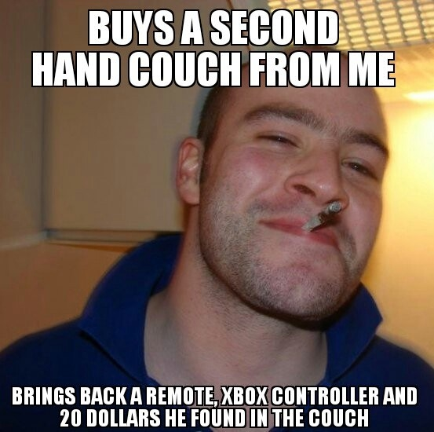
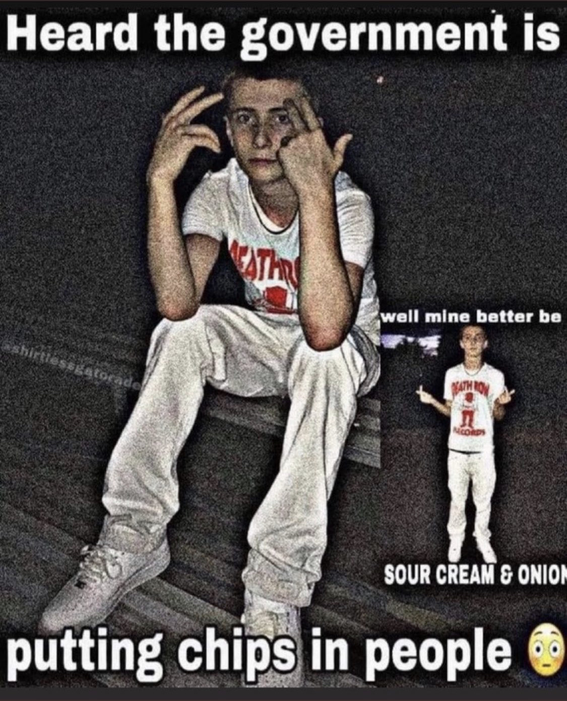
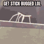
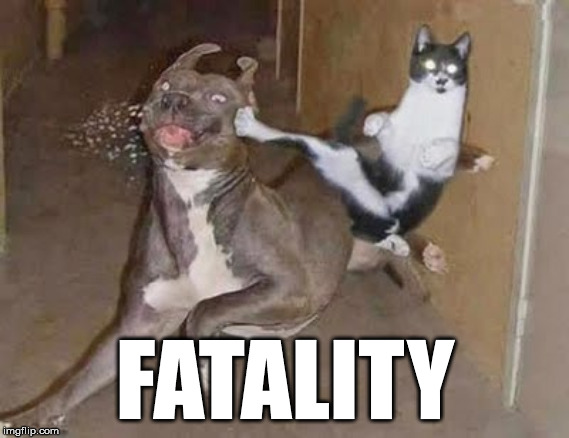
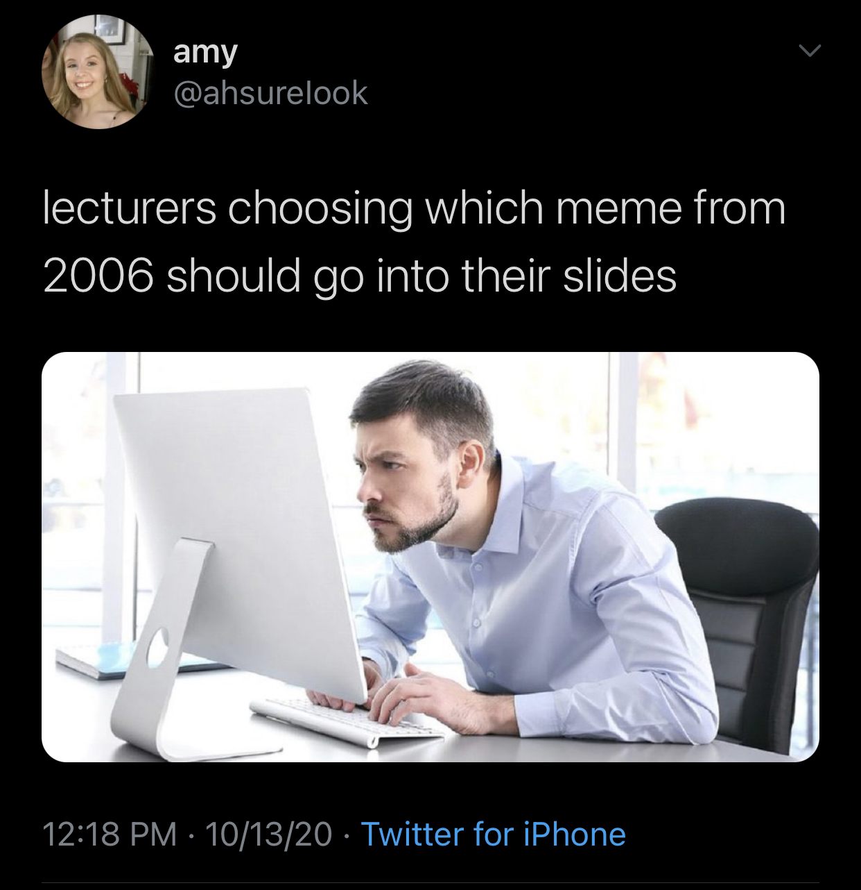
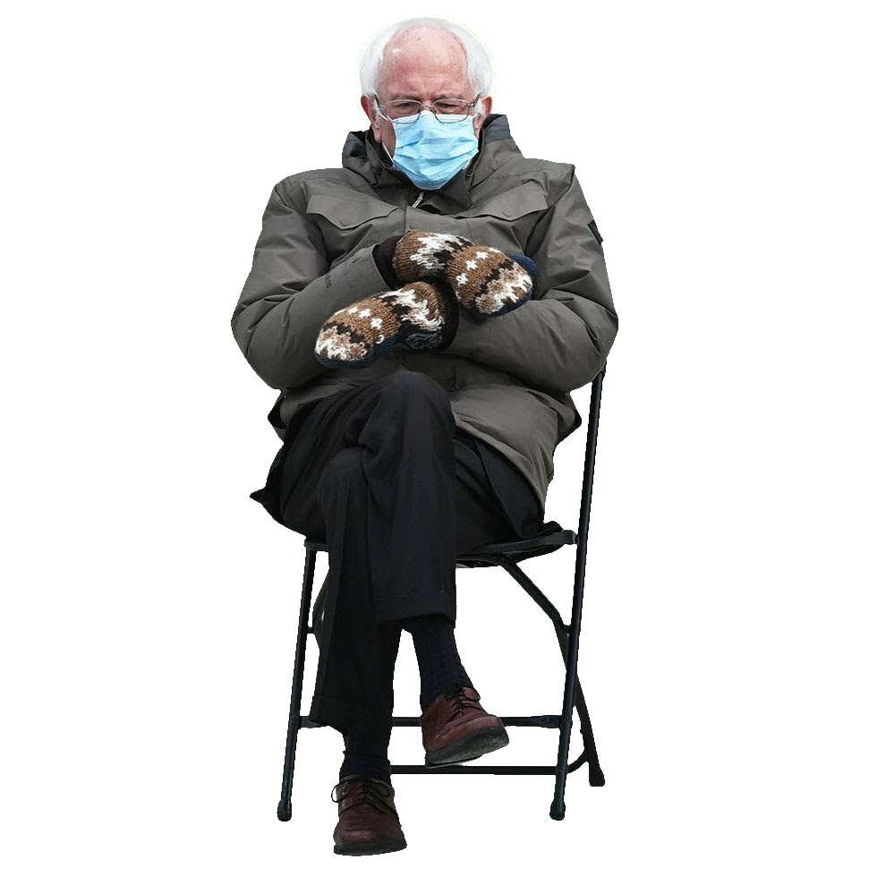

All my slides are presented using reveal.js, and do not exist as Powerpoint or PDF, but instead, as websites.
To navigate my slides, use the arrow keys, the onscreen controls, or swipe on mobile. To scan through slides, hit ‘Escape’.
To print or make a PDF, add ?print-pdf to the URL after .html in Google Chrome and then ‘Print’ as usual.
(Please note that PDF/printing is not ‘officially supported’ by the instructor, and the results may be very strange in places)
Introductions
Why do this?
What’s Will’s problem?
How are we doing this?
Our roles
Our plan
Teaching Professor, Linguist, Gigantic Nerd
We went from text, to ‘reaction images’ and comics, to ‘image macros’, to the modern meme
I was an early denizen of many of the early internet meme sites
IRC, Something Awful, Fark, YTMND, 4Chan*, eBaumsWorld, and more
4Chan wasn’t always what it is today


“Understanding what they’re saying and simply knowing that they exist can be considered a showing of one’s internet cultural knowledge,” says Mr. Styler, who runs the Linguistic Mystic blog.
“In the same sense that using a reference from a hot new movie can include you in a group, doing something using an ‘im in ur…’ construction is a mark of somebody who understands internet culture.”
https://amp.news.com.au/news/rise-of-the-lolcats/news-story/86a968cb6722c05b6bfd559f30445ee9







“Oh, I’m not into memes, but I’m really interested in TikTok audios!”
“I want to do my project on uwu, but that’s… not a meme?”
New phenomena arise every day that aren’t memes, but are memetic
Where on earth do we draw the line?
A meme is an idea, behavior, or style that spreads by means of imitation from person to person within a culture and often carries symbolic meaning representing a particular phenomenon or theme Wikipedia
Idea or Behavior
Viral spread
Culturally grounded
Carries Symbolic Meaning
What else acts like this?
Memes (duh)
Physical Actions (e.g. planking, flossing, peace signs)
TikTok Trends and Audios
Aesthetics and Leitmotifs (e.g. deep frying, meaningful fonts)
Paralinguistic Stuff: Emoji use, Keysmashing, SpOnGeBoB TeXt
Interaction patterns (e.g. “That’ll be $69.42” “Nice.”)
Dogwhistles (words that subtly reveal affiliation with a group/ideology)
Culturally Specific Words (e.g. ‘gg’, ‘any %’, ‘hotep’, ‘pov’)
All of language!
Idea or Behavior
Viral spread
Culturally grounded
Carries Symbolic Meaning
You’re looking for ideas or behaviors, spread virally, within cultures, with meaning, on the internet
… and you’ll use linguistic analysis on them
One Handy Rule: Try to choose things that are considered ‘non-standard’ usage of language
The world is your oyster, and anything’s a meme if you convince me
This is a wildly broad term
Words, pronunciations, memes, meme templates, paralinguistic stuff
Basically anything which carries meaning and is linguistically analyzable


‘You never step into the same river twice’
In fact, I’ll be making an effort to use millenial memes and language to prove this point!
… but memes move fast!

The answer?
Generally, I’m telling you all how the world works
I give you information, you give it back to me on tests
I know about my era of memes
I am incredibly online
I know how language works
I don’t know exactly how memes work lately
I don’t know how your parts of the internet work
There is no ‘right answer’ that you can be tested against
Except one
This is kind of a Field Methods class
The professor sits down with a group of students and a speaker of a language that they don’t know
The professor teaches the students how to find out how the language works
… and they all study the language together by talking with somebody who knows the language
Elements of linguistic analysis and linguistic theory
… with a specific mind towards concepts which I think are meaningful here
… and with examples in my old school understanding
I’ll give areas for us to focus on each week
You’ll apply what we’re talking about to the online communication in your lives
You’ll take the analyses deeper
You’ll focus on a specific area
I’m depending on you all as much as you’re depending on me!
We’re on the same team!

I am giving you the power to determine your own grade
You are giving me and your classmates good work in return
‘Blowing off’ the class is a jerk move, please respect our community by putting in effort, or leave it
To teach you how linguists analyze the parts of language relevant to memes
To present you all with discussions and activities which will help us engage with the language of memes
To create a structure for the course and ensure a safe environment for learning
To guide you through difficulties you’ll face on the path
To evaluate you on your effort, participation, and engagement with the problems at hand
They will help guide you in your analyses and offer suggestions and feedback
They will be a resource in between classes
They’ll help me to evaluate your effort, participation, and engagement
They’ll help me to maintain a safe space in our classroom, virtual and otherwise
You will participate, coming to class sessions, chatting in Discord, asking questions, and engaging with the activities
You’ll prepare for class sessions, finding and bringing memes and examples from your daily life, and completing the discussions
You’ll interact with your group members during class and during your final project, and stay home when you’re sick.
You’ll be kind, considerate, and build and maintain our classroom community
You won’t be able to regularly attend class sessions
You’d rather not work in groups and participate in discussions
You have a deep innate desire to be an edgelord
You don’t really care for memes or the internet
You have a pun allergy
What are we doing here?
What kinds of memes are and aren’t welcome in our classroom?
Who are we working with, and how will we do this ethically?
Start finding groups in Discord and Canvas
Feel free to post a ‘Seeking’ ad if you’d like to take a leadership role or advocate for an area of study, or just chat with folks and find kindred souls
Be kind and welcoming, damnit
You can change groups later, that’s fine!
Does this stuff actually make sense as ‘language’?
What are grammaticality judgements?
Can memes and new language be ‘grammatical’ or ‘ungrammatical’?
How do we find meaningful chunks of words in language?
How does this relate to memes and new language and behavior?
What meaningful ‘chunks’ exist within memes?
How can we take advantage of these chunks of form and meaning to make new memes?
Do linguistic ideas of productivity and creativity make sense here?
How do new words and templates happen?
How do new chunks of memes and words happen?
How do these things evolve over time?
How do we think about meaning in language?
Do linguistic understandings of meaning play a role in our understanding?
What do these things ‘mean’ anyways?
How does language intersect with social identity?
Your project proposals will be due this week!
What is a language community?
Can we use these linguistic tools to better understand meme usage?
How does our use of these things tell people about who we are?
How do language and culture interact?
How do memes and culture interact?
Can memes be translated across cultures?
How does language change?
How do these things change?
Do memes become more abstract or concrete or both over time?